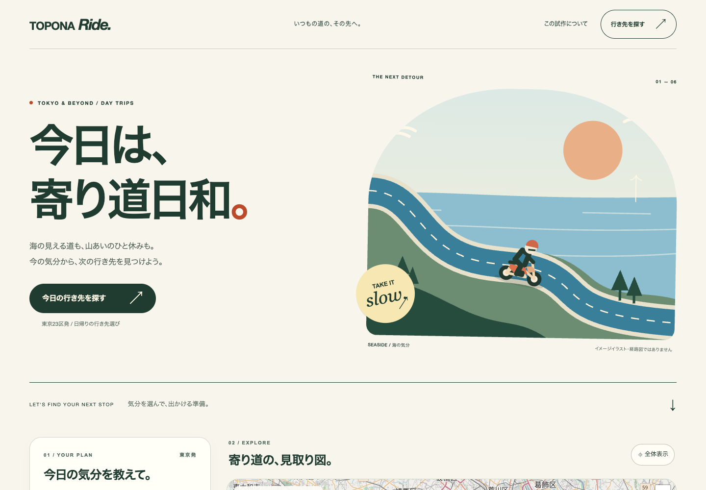
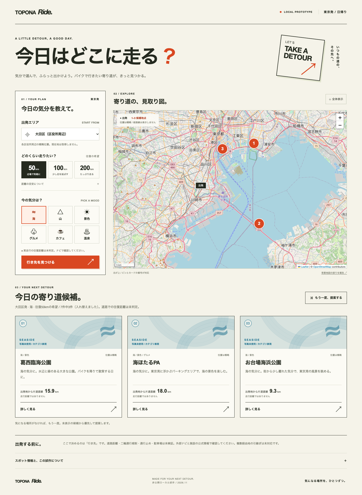
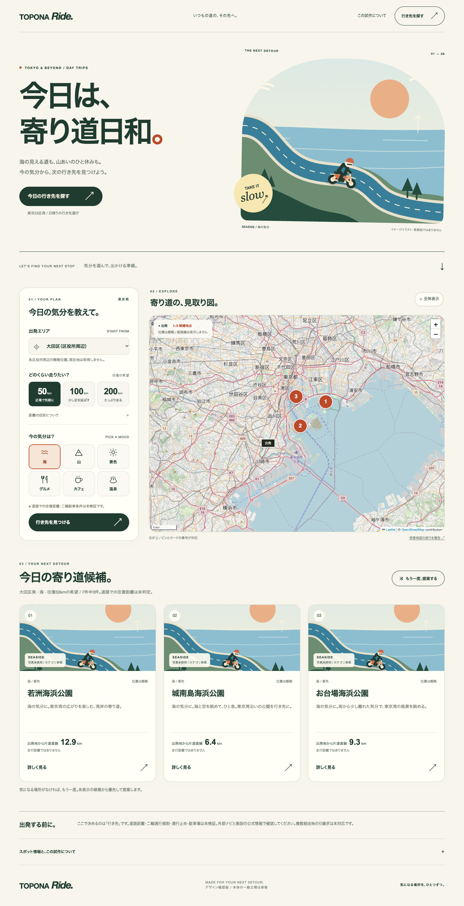
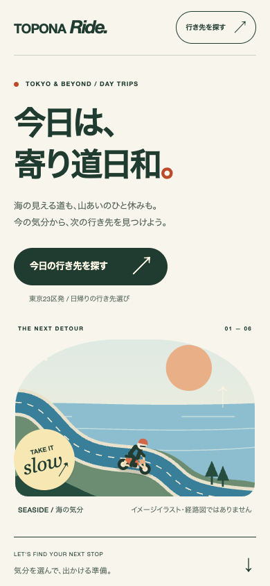
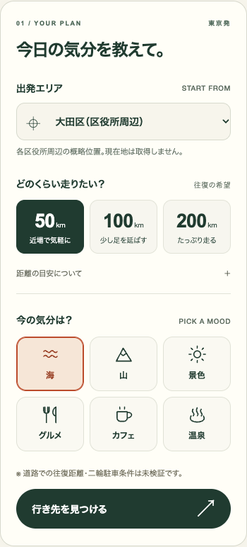

主役が伝わる最初の画面
見出し・景色のイラスト・行き先を探すボタンを、一続きで見られるようにしました。
A LITTLE DETOUR, A GOOD DAY.
TOPONA Ride本体の最初の画面・条件選択・候補の紹介・詳細画面を整えました。大きな見出しと独自のイラストで、出かける気分を楽しみながら、行き先を選べる画面にしています。
変更を動画で見るこのページは制作報告です。Ride本体はまだ一般公開していません。

音声・日本語字幕付き。VOICEVOX:ずんだもん／ノーマル。操作部分は実画面の等速録画です。
見出し・景色のイラスト・行き先を探すボタンを、一続きで見られるようにしました。
出発エリア、希望距離、6つの気分を整理。選択中の状態がはっきり分かります。
場所の名前、おすすめする理由、距離についての説明を、それぞれ分けて表示しました。詳細からGoogle マップを開けます。



スマホ・タブレット・パソコンに相当する3種類の幅で確認。横にはみ出さず、主要なボタンは押しやすい大きさに統一しました。

距離の扱い、候補の重複防止、未確認地点の除外など、推薦の検査10件が成功。画面操作の検査6件も成功しました。候補の再提案・詳細・Google マップへの引き継ぎに加え、地図やナビが開けないときの表示も確認しました。
iPhone相当の画面幅で確認しました。実際のiPhoneでの表示・操作は、今回まだ確認していません。
今回は画面デザインの変更です。推薦は既存の20施設を使い、新しい43地点の駐車場データベースは本体にまだ接続していません。
イラストは現地写真や経路図ではありません。道路での往復距離、二輪通行規制、駐車条件の確認が済んだ案内とは区別しています。
これまでの版を残し、今回の変更は別の作業用の版に保存しました。本体の一般公開は保留のままです。